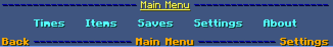

The main menu can be reached by clicking the button on most TKRS chat messages, or with the '/tkrs' command.
You can view your best race, best laps, and average race/laps.
This menu is displayed when entering a TKR lobby, and can also be accessed with '/tkrs times'.
You can also filter the statistics to a particular time range, such as the last day:
The date that a best race or lap time was achieved can be viewed by hovering over it:
Item usage statistics, such as uses and hits, can also be viewed:
This includes green missile deflections and distances (page 2):
Information is also showed live during a race, when you complete a lap or get a green missile hit:
The lap message shows two time comparisons:
TKRS can also record your movements and actions during a race to be played back later!
Saved races can be viewed from the main menu. A save will be played back during a race if it is enabled,
which is done by selecting a kart type for at least one lap or the entire race.
If a kart type is selected for a particular lap of a race save, it will begin playback when you start that lap.
Karts for saves can be selected manually, but they can also be set automatically. Automatic options include:
For both the manual and automatic mode, the kart type can be selected:
Once TKRS records your first race, if you have it enabled, you'll be able to race your ghost!
TKRS includes multiple useful settings:
A few details are useful to know about the TKRS file system.
Statistics can be transfered from one computer to another by copying the files in ./minecraft/mods/tkrs/stats from the source computer to the destination computer's ./minecraft/mods/tkrs/merge folder.
Saves can also be transfered, so you can race your friends' ghosts! Just put a ".race" file into the .minecraft/mods/tkrs/saves
Race saves are about 300kb on average, so consider storage space before saving 10000 of them!
Consider supporting future development of TKRS:
Buy me a banana